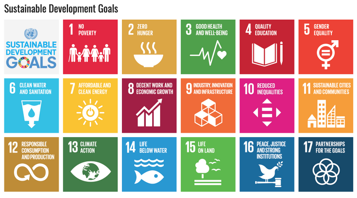

What is sustainability?

When it comes to sustainability, what topics come to mind for you?
Sustainability is a very broad term that encompasses various aspects of our society that need to be developed for a better future, such as health, hygiene, food security, and equality.
Return to main